BIOLOGY - IX
To Life Processes
y Metabolism y Internal environment and Homeostasis y Plasma membrane and Exchange of substances
7
y Photosynthesis and Nutrients y Plant services y Plant protection
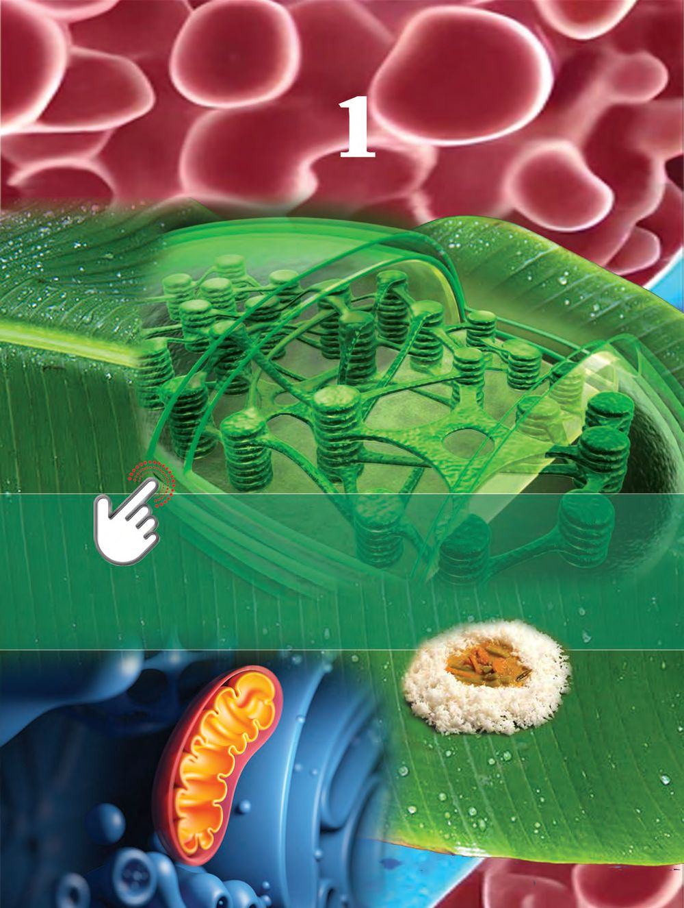
BIOLOGY - IX
To Life Processes
y Metabolism y Internal environment and Homeostasis y Plasma membrane and Exchange of substances
7
y Photosynthesis and Nutrients y Plant services y Plant protection
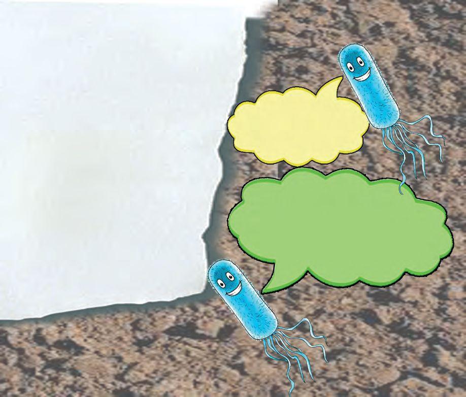
BIOLOGY - IX
The key of life is in the safe of science
Can life be created artificially? This is a challenge that science had taken up long before. Efforts towards it intensfied after the first decade of the 21st century. After continuous efforts, the first artificial bacteria became a reality through genetic engineering. A team of researchers at Cambridge artificially created E.coli bacterium that lives in the intestine and soil. Even though at a slow pace, the artificial bacteria can grow and divide itself.
You are the duplicate, I am the original
No original a nd no duplica te. Both of us are bacteria. It’s ju st that I was ma de in a lab
Above is a hypothetical conversation between naturally occurring bacteria and bacteria produced in lab. The creation of artificial bacteria was an amazing breakthrough in scientific world. Movement, response, respiration, growth, reproduction etc. are the signs of life. You know that cell is the basic structural and functional unit of life. The chemical reactions essential for the existence of life mainly take place inside the cells. Many molecules are required for the cell structure and cell functions. These molecules are formed by the various combinations of elements such as carbon, hydrogen, oxygen, nitrogen, phosphorous and calcium.
8

Carbohydrate, protein, lipid and nucleic acid are the basic building blocks of life. These are known as biomolecules. Analyse illustration 1.1 given below about biomolecules and gain understanding.
BIOLOGY - IX
Examples Glucose Fructose
Carbohydrates
Sucrose Starch Cellulose
Lipids
Biomolecules
Fats Oils Enzymes
Proteins
Hormones Antibodies
Nucleic acids
DNA RNA
Illustration 1.1 Biomolecules Expand the illustration by finding more examples for biomolecules. All life signs are manifested by the actions of biomolecules and many other chemical factors inside the cell. All such chemical reactions together taking place in an organism are called metabolism. Metabolism can be divided into two. Anabolism which combines molecules and catabolism which breaks down molecules. Complete the illustration 1.2 given below to gain an understanding of metabolism. 9
The size of a minute calculation There are 37 trillion cells in human body. It is estimated that one billion chemical reactions take place every second in each cell. If so, how many chemical reactions take place in body cells in one second? Read on 37000000000000000000000.
BIOLOGY - IX
Metabolism
Anabolism ..................................
.................................. Breaking down of proteins Plants synthesise glucose using carbon dioxide and water
Protein breaks down into amino acid
Illustration 1.2 Metabolism Biomolecules such as enzymes and hormones are also formed inside the cell to regulate and help metabolism. Analyse the description given below and gain an understanding. Find more examples of these by gathering information.
Enzymes and Hormones Enzymes are molecules which help to speed up the countless chemical reactions that take place in organism every moment. Most enzymes are proteins. Salivary amylase present in saliva and pepsin present in gastric juice are examples for enzymes. Hormones are chemical molecules that regulate and coordinate biological processes. These are produced by various endocrine glands. Testosterone, estrogen and progesterone that control the function of sex organs are examples for hormones.
10
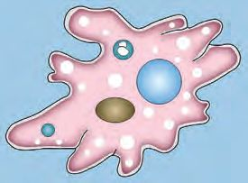

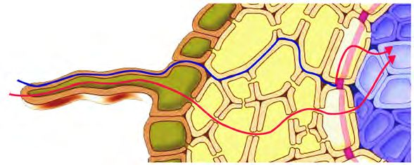
BIOLOGY - IX
You have understood that certain factors necessary for metabolism in living organisms are synthesised inside the cell. Many other factors required for metabolism are obtained from their external environment. Which are they? List out. ...................................................................................................................................................................................................... ...................................................................................................................................................................................................... Have you ever thought how substances from the external environment get inside the cell? Analyse the figures 1.1(a), 1.1(b), 1.1(c) and descriptions , discuss and gain understanding. Amoeba
Animals
External environment
Extracellular fluid
In unicellular organisms, substances from the external environment enter the cytoplasm through the cell membrane.
Substances received from the external environment undergo certain changes and reach the extracellular fluid. From there it enters the cytoplasm through the cell membrane.
figure 1.1 (a)
figure 1.1 (b) Plants
From the external environment substances enter the cytoplasm through various means.
y Through the cell wall and through extracellular spaces. y Through cytoplasmic connections called plasmodesmata that connect adjacent cells. y From one cell to another through plasma membrane. figure 1.1 (c) 11
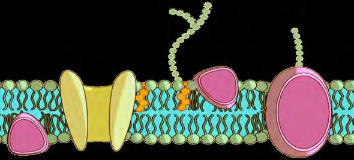
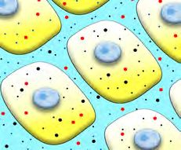
BIOLOGY - IX
Is there internal rnal environment like exte environment? Haven't you noticed the child's doubt? Note down your guess. ...................................................................................................................... ...................................................................................................................... Analyse the description given below and check the validity of your guess.
In animals the fluid found in the space between the cells (extracellular fluid) serves as the internal environment. The internal environment of plants consists of cell walls and their components, extracellular fluid and air sacs between cells. Keeping the composition of the internal environment constant is called homeostasis. Homeostasis needs to be maintained for the smooth functioning of metabolism. Disruption of the chemical composition of the internal environment can be threatening to life. You have understood that simple molecules that are required for metabolism enter cells through cell membrane from internal environment. How far suitable is the cell membrane for this?
Exchange of materials through cell membrane You have learned about the structure of cell membrane. Which are the main components of cell membrane? Label them in the illustration 1.3. Internal environment
Cell membrane
Cytoplasm
Illustration 1.3 Structure of cell membrane 12
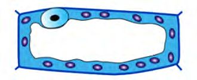
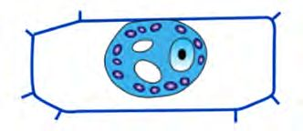
Haven’t you understood why cell membrane is also known as plasma membrane? Discuss. Only certain molecules can pass through the plasma membrane. Water, oxygen, carbon dioxide etc. can easily pass through it. But certain substances and ions can only pass through special channels or pores present in the plasma membrane. Molecules are constantly passing in and out of the cell. Don’t you want to know about it? Do the activity given below to understand how water molecules pass through the plasma membrane.
Take a thin outer layer of spinach/rhoeo leaf. Cut it into two pieces and put one in fresh water and the other in concentrated salt solution. After two minutes transfer both the layers to a slide and observe under a microscope.
Illustrate your observation. Compare your drawings with figures 1.2 (a) and 1.2 (b). Identify each and record in which contexts they occur?
..............................................
.............................................. figure 1.2 (b)
figure 1.2 (a)
Observe figure 1.2 (a) and 1.2 (b) and find out the change that happens in the cells. Based on illustration 1.4, analyse the results of observation using indicators and record inferences. 13
BIOLOGY - IX
ma Why plas e membran s a is known selectively le permeab e? membran Find out.
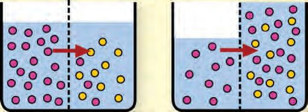
BIOLOGY - IX
Semi permeable membrane Water molecules
In a beaker fresh water and salt water are seperated by semi permeable membrane
Salt molecules
A
B
A
At the beginning of experiment
B
After one hour
Illustration 1.4 Flow of water molecules Concentration of water molecules at the begining of the experiment. Concentration of water molecules after one hour. Direction of the flow of water molecules.
s appen What h ns to raisi in placed r ate fresh w ? hy and w
In the place of semi premeable membrane in illustration 1.4, there is the plasma membrane of spinach/rhoeo cell, isn’t there? Why did the cell that was immersed in the salt water shrink? ........................................................................................................................................... Osmosis is the movement of water molecules from a region of its higher concentration to a region of its lower concentration through a semi permeable membrane.
ut.
Find o
You have understood that water moves in and out of the cell through osmosis. er. ctors besides wat There are other fa ll? ce in and out of the How do they get
Didn't you notice the child's doubt? Analyse the illustration 1.5 according to the indicators and record the inference by identifying how the movement of oxygen takes place through plasma membrane. Oxygen
Cell membrane
Cytoplasm
Illustration 1.5 Flow of oxygen molecules 14
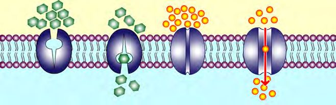
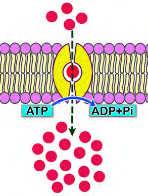
y Difference in the concentration of oxygen molecules. y The direction of flow of oxygen molecules. Diffusion is this type of flow of molecules. It does not require enegy. Analyse the illustration 1.6 and 1.7 according to the indicators and make a note on two other processes that help in the exchange of materials. Concentration of glucose is more
Concentration of ions are more
Cell membrane Cytoplasm Carrier protein
Channel protein
BIOLOGY - IX
usion Will diff ce take pla and through semi without le permeab e? n membra t. Find ou
Facilitated diffusion A process that does not require energy and takes place with the help of certain proteins in the plasma membrane.
Illustration 1.6 Facilitated diffusion The concentration of salts are less
Cell membrane
Cytoplasm The concentration of salts are more
Illustration 1.7 Active transport y Difference in the concentration of molecules. y Proteins in the plasma membrane that help the entry of molecules into the cell. y Requirement of energy.
15
Active transport An energy requiring process that takes place with the help of certain carrier proteins in the plasma membrane.
BIOLOGY - IX
Complete the work sheet 1.1 by including processes involved in the exchange of materials. The nature of flow of molecules From a region of higher to lower concentration
Name of the process
From a region of lower to higher concentration Applicable to water only Energy required Energy not required Carrier protein not required Carrier protein required Work sheet 1.1 Processes related to movement of substances You have understood the role of plasma membrane in transporting substances in and out of the cell.
Source of nutrients Nutrients are essential for metabolism. How do animals get them? What about plants?
............................................................................................................................................. Algae are the group of unicellular or multicellular organisms. Algae and the blue green algae which are prokaryotes obtain nutrients through photosynthesis.
............................................................................................................................................. Photosynthesis is the process by which plants make food. List the components required for photosynthesis.
• Chlorophyll
• .............................................
• .............................................
• .............................................
Observe the illustration 1.8 and discuss the parts involved in photosynthesis based on the indicators and make a note. 16
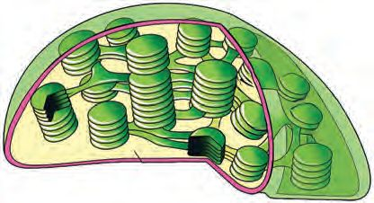
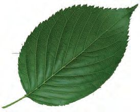
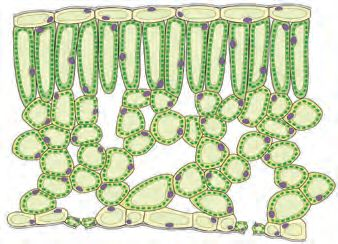
BIOLOGY - IX
Epidermal cells
Mesophyll cells
Outer membrane Stomata
Chloroplast
{ Inner membrane
Membrane sacs called thylakoids
Stroma-the fluid part Grana - stacks of thylakoids Chlorophyll is seen.
Stroma lamella
ST-459-2-BIOLOGY(E)-9-VOL-1
Illustration 1.8 Structure of chloroplast
•
Structure of chloroplast.
•
Position of chlorophyll.
•
Thylakoid, grana and stroma.
Photosynthesis Photosynthesis has two phases. Complete the table 1.2 by analysing illustration 1.9 and the information given.
17
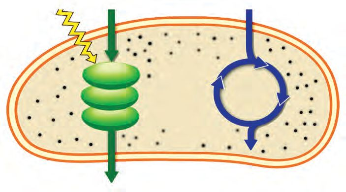
BIOLOGY - IX
Sunlight
Water
Carbon dioxide
Stroma
Grana
ATP Hydrogen Glucose
Oxygen
Light phase
Dark phase Takes place in stroma. Light is not used. Hydrogen and energy (ATP) required for this phase is obtained from light phase. Glucose is formed by combining. hydrogen and carbon dioxide.
Takes place in grana. Takes place in the presence of light. Water splits into hydrogen and oxygen. Expels oxygen. Hydrogen reaches stroma. ATP, the energy molecule is formed.
Illustration 1.9 Phases of Photosynthesis Photosynthesis Hints
Light phase
Dark phase
Place where reaction takes place
Melvin Calvin He was awarded Nobel Prize in Chemistry in 1961 for explaining the reactions in the dark phase
Reactions Products
Table 1.2 Phases of Photosynthesis 18
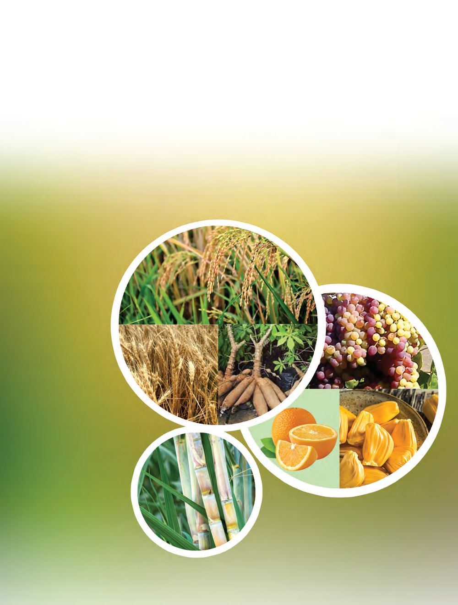
Complete the illustration 1.10 by including the reactants and products of photosynthesis. ................. + .................
Sunlight Chlorophyll
................. + .................
Illustration 1.10 Substances involved in photosynthesis
elf ght its i l n u s Is r ired fo is requ thesis? yn photos synthesis oto Can ph ace under take pl f an LED ht o t. the lig ind ou bulb? F
Various nutrients from glucose Glucose, produced as a result of photosynthesis, dissolves quickly in water so it is stored as insoluble starch. Energy required for the life processes of plants is obtained from starch. Many substances are produced when starch undergoes metabolism. Observe the pictures 1.3 and 1.4 given below and complete the illustration 1.11.
Sources of various nutrients
Starch
Fructose
Sucrose
Figure 1.3 Carbohydrates 19
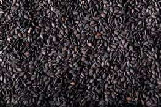
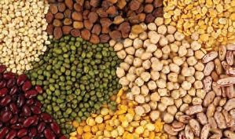
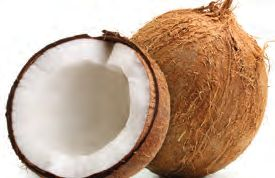
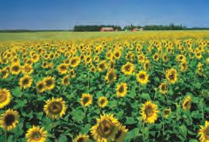
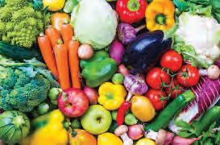
BIOLOGY - IX
Fat
Protein
Vitamins Figure 1.4 Fat, protein, vitamins Photosynthesis Glucose Starch Sucrose
Vitamins
Illustration 1.11 Various nutrients from glucose Didn't you understand how plants get nutrients? Other organisms receive these nutrients for their life activities. You know about nutrition and nutrients. List the nutrients.
y y y
y y 20
Minerals Water
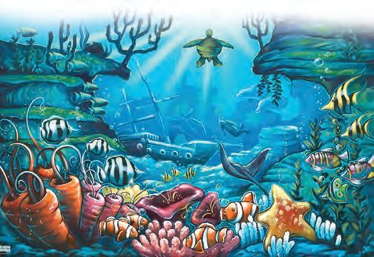
BIOLOGY - IX
Nutrients produced by plants through metabolism reach herbivores through food. Herbivores are eaten by carnivores. Haven't you understood why plants are called autotrophs and animals are called heterotrophs? Plants grow in water as well as on land. Who are the producers in the ocean and other water bodies? ........................................................ ........................................................ Substantial amount of oxygen in the atmosphere is released by producers in the ocean. Pollution is the most serious threat the marine ecosystem faces. As a result, species become extinct in large numbers. What are the steps to be taken to prevent ocean pollution? Discuss. Are food and oxygen the only things that plants provide? Arrive at inferences by analysing the illustration 1.12 and the description.
Ocean a wonder Three fourths of the earth is ocean. They include lakhs of species and many habitats. An oceans is divided into three zones based on the availability of sunlight. From the surface to 200 meters depth is the Euphotic zone. Large number of organisms live in this area, as they get sufficient sunlight. Dysphotic zone comes below 200 meters to thousand meters. Eventhough the availability of light in this area is limited, there exists a plant centered web of life. Aphotic zone is below thousand meters. The amount of sunlight available there is very less. So photosynthesis does not take place there. But some organisms present there can produce light. Animals in the aphotic zone feed on the dead remains of the organisms in the dysphotic zone. There are also some bacteria that survive through chemosynthesis. The UNO’s prediction that by 2050 the weight of plastic swept into the ocean will surpass the weight of fish stocks is shocking. May the ocean not be an oblivion but remain as a marvel and continue to inspire human thought.
21
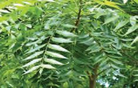
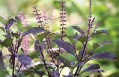
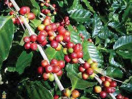
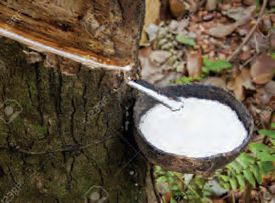
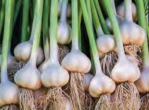
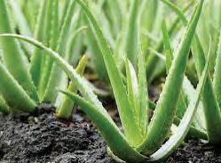
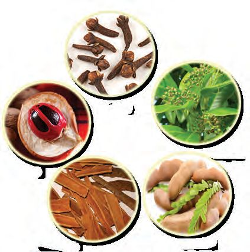
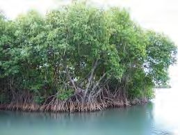
BIOLOGY - IX
Medicines Rubber Latex
Biopesticide
Drinks like coffee and tea
Spices
Illustration 1.12 Economic importance of plants
Mangroves - gift of nature Mangroves are found where back waters meet the sea. Kerala has 43 species of mangrove plants that grow in salt water. Our state had 70,000 hectares of mangroves in 1975. But ninety eight percent of it has been destroyed. Mangroves provide invaluable service to the environment. y A source of fish wealth. y A storehouse of biodiversity. y Conservation of coastal soil. y Defence againt global warming by absorbing 4-5 times more carbon dioxide compared to evergreen forests. y Prevention of tsunami 22
BIOLOGY - IX
Kallen Pokkudan (1937-2015)
Kallen Pokkudan is the environmentalist who conscientised on the importance of the mangroves through their conservation. He had planted more than one lakh mangrove saplings. He upheld the view that mangroves must be grown in their natural habitat. He is called Kandal Pokkudan as a recognition for his activities in the conservation of mangroves. He proved his love for nature through the preservation of mangroves and his autobiography is titled “My Life among Mangroves”. The Environmental Protection wing of the UNESCO has mentioned his name for contributions in mangrove conservation. He passed away leaving behind the dream ‘ A school for Mangrove study‘.
You have understood that nature and humans are receiving countless services from plants. Only some indicators are given above. After collecting more information, organize a seminar on the topic ‘Plants- the protectors of biosphere’.
Sub topics • Economic importance of plants • Ecological importance of plants On the basis of the discussion, the content of sub topics may be changed in accordance with the biodiversity features in the locality. You might have acquired a comprehensive knowledge about the role and importance of plants in the biosphere through the seminar.
Plants are the foundation stones of the biosphere. Depletion of plants will ultimately affect the survival of life itself. The concept of sustainable development is formulated by considering plants as well. If that is to be possible, activities focused on environmental awareness is necessary. We all need to be prepared for that. That will be possible only if we adopt an environmental perspective in life, based on scientific consciousness.
23


BIOLOGY - IX
Let us Assess 1.
2.
Compare the outer membrane of raw egg and boiled egg using the indicators given below •
Permeability
•
Possibility of osmosis
•
Possibility of active transport
Given below is an answer written by a child to the question ‘How is oxygen released in photosynthesis’? Evaluate and comment on it. Carbon dioxide and water are the raw materials for photosynthesis. Both these breakdown and oxygen is released.
3. ‘Though photosynthesis is ultimately anabolism, it also involves catabolism’. Analyse the statement.
Extended activities 1.
There are so many people who have dedicated their lives for environmental activities. Collect information about them and prepare an album.
2.
Complete the table given below by observing plants in the surrounding. Plants
Value added products
Consumption
Coconut tree
Coconut oil
For cooking
Medicine
24